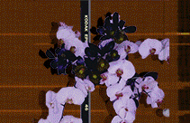

All your entries, ever, here

I find myself having to dodge being in lack luster relationships with guys who are lovely but just don’t do it for me in the way I need doing. It’s not their fault or mine, I’d just rather be alone than have the safety of knowing there’s a warm body in bed next to me; because while we’re ultimately always alone (we born & die alone) we’re also NEVER really alone. Don’t underestimate male friends, your girlfriends, family, people watching, conversations in passing with strangers, etc. Voids can be filled. Build your own support system/new familial structure. Some of my LONELIEST most unhappy moments have been while in a not quite right relationship. More specifically, while laying next to the guy in bed, or during silent car rides together.
Until I stumble upon my ‘be all, end all person’ (which is subjective & only I’ll know it when I see/feel it) who is so undeniable to me… I’m gonna continue being selfish. I don’t want to put myself in front of someone and metaphorically ask them to accept me, cuz 1. I don’t give a shit if they do or don’t, and 2. That would mean, I’d have to accept them! And, I don’t have it in me! Relationships require a LOT of energy and consideration if you’re gonna do it right.
And at the moment, I don’t want to accept, compromise, be interested, make conversation, feign interest, be sexed, touched by anyone, not be my flirty or inquisitive self in public; i don’t want to be conscious & considerate of a partners feelings, come home early instead of late. I don’t want to have to wait to eat and check in with someone and say “Hey, have you eaten yet? Should I wait for you and we’ll eat together?”
11/21/2017
i don’t know what it is. is it a sign of the times? whatever it is, i tend to feel perpetually unsatisfied.
am i alone in this?
it’s funny, if i didn’t set such high, specific goals for myself, maybe i wouldn’t feel this way. maybe i’d be satisfied. but being ‘satisfied’ sounds horrible too. satisfaction sounds like giving up. like getting fat, wearing sweat pants, & watching television… forever. like settling.
but as long as i haven’t met my self-imposed goals, i feel like a failure. i feel incomplete. i feel ‘less than’. and i’m sure as hell not grateful for all that i DO have. as it is: life is great. i am a white girl with bangs in los angeles. aside from getting the least serious form of cancer when i was in my early twenties (thyroid) and being emotionally & physically abused by my parents (hitting, not molesting – but geeze, what was wrong with me? not pretty enough? jkjk)… i have a good life. i’ve always made a living all on my own. i don’t have a rich family to fall back on, so i’ve never had help or a safety net. and i would never think to ask anyone for help.
but i want a lot for myself. i’m not sure if accomplishing those things will even make me happy, but right now, i believe it will… so that’s what i strive for. and if i get those things, and they don’t bring me happiness, i will go from there. yes, i know you’re supposed to be happy with yourself first because no person or thing can complete you or fill a hole inside you. well, except my vaginal hole- but you know what i mean. anyways… for the most part i am happy. but when i am quiet and still; when i am just meant to co exist and be calm with another – it’s hard for me. being in a partnership when i am unsatisfied with myself and terrified of potentially NEVER realizing my goals makes me take it out on my partner – which makes me feel as though i’m better off being alone until i realize my dreams. but that might never happen and then i will be alone forever. i need to learn to co-exist with someone no matter what i’m experiencing. don’t i? idk. i’m so rigid and controlled, and can be really stubborn and a know it all. i even constantly question what type of man i’m most supposed to be with- even when i’m WITH a good one. like a lot of girls, i’m chasing a ghost. someone who may not even exist. this scares me. do i take the imperfect, interesting beauty life places in front of me, and realize that that’s what life is… or do i get caught up in my head and say: i should be this, my life should be that, i should be with the type of man who is a, b, or c. even though i’ve yet to meet that phantom man, or even gel with/be interested in him if i HAVE met him.
12/12/2017
i wonder if there’s more. i’ve been listening to radio shows lately that feature a guy named james van praagh, who says we are all just souls who inhabit a body and we never really die. there is no such thing as dying in fact, we just leave the bodies we inhabit. we leave these space suits. and we are here on this earth because we chose to be; to learn a lesson. sometimes i wonder what my lesson is to learn while i’m here. i don’t meditate. i don’t like yoga- sometimes i do, but for the most part i don’t. i like long quiet walks while i people watch and think thoughts and am in my head. i’ve heard this is a type of walking meditation. i’m a searcher. be it with my writing, via therapy, books, psychics, shamans, clairvoyants, tarot, conversations with strangers young & old, etc. i want to know what’s gonna happen, i want to learn from people, i want to know it’s all gonna be ok, i want to make a dent in this lifetime, i want to be seen and be helpful and be recognized for making a positive difference, i want to make people laugh. i want to feel connected. i want to feel like i belong. i want a lot.
i guess i have to find the happy medium of enjoying life, being happy, being grateful, being in the moment, working, and resting – so i can appreciate the special and amazing things that happen, while always simultaneously continuing to strive for more so i grow and feel like i’m learning something, becoming better, contributing something not even intentionally, just via my trying to understand more and go deeper and because i like what i’m doing. and appreciating the moments as they happen. not always living in the future. a future that might never happen.
01/18/2018
I have to stop with the “i’ll be happy when that happens.” “when THAT happens, then i’ll feel like i can have fun/take a trip/do that thing/breathe/feel worthy of existing/feel like i’m good enough/bring something to the table/am no longer invisible/am allowed to exist.”
i’m realizing that it’s the process of being ‘in the doing’ and making of things that brings happiness. building a life and collecting stories that makes for an emotionally satisfying full life experience. a rich life. a fulfilling life. a higher quality of life. i’m even gonna get a cat so i have to put my attention on another living thing outside of myself, so i stop being so self-centered and selfish. i’m gonna go out-of-town without being filled with fear that i might miss a job or people might get mad at me. i’m gonna ground myself. i’m gonna have self-worth. i’m striving for more. a higher quality of life.
this perpetual dissatisfaction is a surefire recipe for depression. and it has to stop. i get so trapped in my head, spiral downward and am missing out on what could be a great life because of all my doom and gloom. things that help me get out of my head are listening to music all the time. listening to it loud. taking baths. taking pride in how i put myself together before i leave the house, and throwing myself into writing/work, always having a book to read or listen to; always be learning and discovering things: be it music, art, people, designers, writers, etc. being inspired or to inspire. be nice. talk to strangers… but not too much and not ALL the time. having boundaries is important & being conscious of the energy you expend on people and things that aren’t good for you or who are not worth your time & could suck you in and drain you.
01/28/2018
we’d just been through the worst weekend trip ever. our relationship was long distance and we were making it work. haven’t having seen each other in 17 days, we were having a quick 48 hour visit. those are a lot of pressure. cuz you want it to go well. you have high expectations. and there’s no real-time for error. this trip didn’t go well. it started on a bad foot, thanks to my insecurities. you wanna know what i did? i shouldn’t tell you. i should save face. but i’ll tell you. i got pissed at him because a girl i cannot STAND and is known to be TROUBLE followed him on instagram. but that’s not why i went ballistic. i went ballistic cuz he followed her BACK. i’m not proud of this behavior, but i’m sure my honesty is appreciated and my behavior (however lame) is relatable. this petty, completely unneccessary fight that i started took us on a mutual journey to a million other arguments about issues we have. realer issues. or i should say, REAL issued. our main issue being not hearing each other, making up our own narratives, getting defensive, and just being bad at communicating. or more specifically: we communicate in different ways. in hind sight, our MAIN MAIN MAIN issue being the long distance, the pressure of quick visits, his emotional unavailability and my trust/deep-rooted daddy issues… but back to the story.
i went home. and it stung. it was heavy. i felt relieved to be home, but so lonely. i felt like i’d just lived a nightmare. it was over? already?! what the fuck just happened? a bad 48 hours, and that’s it? was it ruined? but i loved him. and that doesn’t happen all the time. it’s rare. for me anyway
02/04/2018
aren’t all the answers in me? don’t i control my life’s path? if i need / want to accomplish shit, isn’t that all on me? does it matter who i’m with? will i always be unsatisfied? is this the state of the nation – and by nation, i mean privileged people with no real problems? how dare you. it’s all relative. if you have the time to read a blog or instagram, you can relate to me, possibly. but really, is this feeling of perpetual dissatisfaction a sign of the times? does everything move too fast? do we have too many choices at our fingertips? are we comparing ourselves too much because we have the outlets to watch other people brag and showcase their ‘perfect’ exciting lives… even though, behind closed doors, they’re probably suicidal?
i wonder if there’s more. i’ve been listening to radio shows lately that feature a guy named james van praagh, who says we are all just souls who inhabit a body and we never really die. there is no such thing as dying in fact, we just leave the bodies we inhabit. we leave these space suits. and we are here on this earth because we chose to be; to learn a lesson. sometimes i wonder what my lesson is to learn while i’m here. i don’t meditate. i don’t like yoga- sometimes i do, but for the most part i don’t. i like long quiet walks while i people watch and think thoughts and am in my head. i’ve heard this is a type of walking meditation. i’m a searcher. be it with my writing, via therapy, books, psychics, shamans, clairvoyants, tarot, conversations with strangers young & old, etc. i want to know what’s gonna happen, i want to learn from people, i want to know it’s all gonna be ok, i want to make a dent in this lifetime, i want to be seen and be helpful and be recognized for making a positive difference, i want to make people laugh. i want to feel connected. i want to feel like i belong. i want a lot.
02/22/2018
i’m totally scared of dating again. aside from the obvious fear of ego wars, being rejected, and living in the unknown; more specifically, i’m terrified of getting an std. terrified. i’ve come this far without getting warts, syphilis, hpv, herpes, having an abortion, or ANYTHING… and i don’t want to start NOW. i wonder how many people i’ve given blowjobs to and had sex with in the past who had herpes, but i didn’t know cuz they didn’t tell me, and i didn’t get it. and now that i’m older, i’ve begun asking people point-blank if they have any sexually transmitted diseases, and when i boldly ask… they boldly tell me the truth. and sometimes the truth is ‘yes’, which is a very brave thing to come out and say. it’s what they should do. it’s a very personal, vulnerable thing to share and i totally respect them for it… but it makes me want to run in the other fucking direction as quickly as possible.
as quickly as i’d asked, i’ll have wished i hadn’t… because now i have all the information at my disposal. and there’s something to be said for ‘ignorance is bliss’ i mean, at least until you find out you caught something. and while i’m totally able to separate my affection and fondness and respect for a person, from my fear of their std, it still weighs on me. cuz as much as i am attracted to someone who might have something, my main priority is to protect myself. i’m all for being sympathetic and empathetic and i know life happens and this is life and std’s are very common and happen, but at the same time, to have casual sex and risk getting herpes from someone who isn’t even going to be a potential boyfriend and who will never, could never love me… well, that’s too big a risk to take
02/27/2018
for a second i was in love. it was really real. it was intense. i was in a safe pocket. we had created a world where only the two of us existed. we were in the bubble. that’s a term i use when i’m referring to a love bubble: a space that exists only for the two people who are madly in love with one another. it’s invisible, but you can feel it… at least the two people inside of it can. it surrounded us. we were safe in its protection, until it burst. while we were in the bubble, whether near or far, we checked in with one another. we were so connected. he mattered to me. i mattered to him. such an extreme sense of belonging. now there’s an opening where he used to be. my vagina. just kidding. how dare you. too easy. one day maybe i won’t make those obvious misogynist jokes. but i’m my father’s daughter, so it’s difficult. anyways, there’s a metaphoric opening. now i wander alone again. yeah, my life is full with friends and goals and work and hobbies and projects. but there’s always time and room for the kind of love i just lost. until then, i’ll stay busy, until i’m lucky enough to live in the bubble again.
03/04/2018
so once again, i’m going through a break up. this one is different though, and i’ll tell you why: this relationship wasn’t one i was done with. for me, there was so much more to do and experience with him. before i go any further, my ego is demanding i mention that i wasn’t broken up with. no, it was my decision. it could have continued how it was going: long distance. but it wasn’t working for me anymore. it was becoming too disruptive to my life, but i would have continued had there been a plan or a promise of something changing in the future. but this was not the case. and so, in an attempt to protect and take care of myself and be an adult, recognizing something being ‘off’ and not ignoring the red flags… i had to walk away. it’s not easy, and it’s painful and it’s soul crushing. but, now i have to remind myself of how to be on my own again. how to be single again. how to be happy and ‘ok’ with that again. one thing i know is that i’m gonna try it a new way this time. and i’ll tell you what that means in a moment.
i have nothing bad to say about my most recent boyfriend. he is a magical, kind being. quite possibly the kindest, most precious, gentle guy i’ve ever known. but for reasons i’ll keep to myself, which i’ve already blabbed about enough with him, my best friends, my therapist, my mom, and my podcast listeners – it can’t be. i want to say ‘it cant be, right now.’ but that would mean i’m holding onto false hope. and i don’t want to expect anything. i’d rather be happily surprised if it works out in the future.
03/15/2018